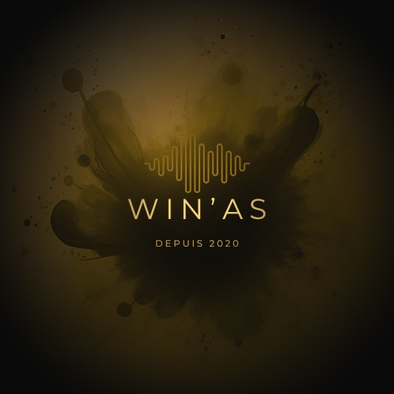
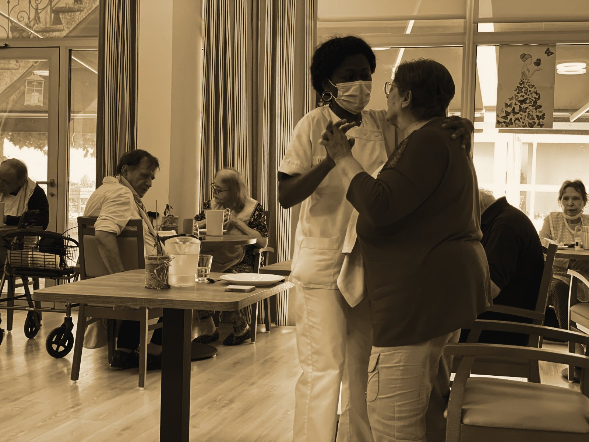
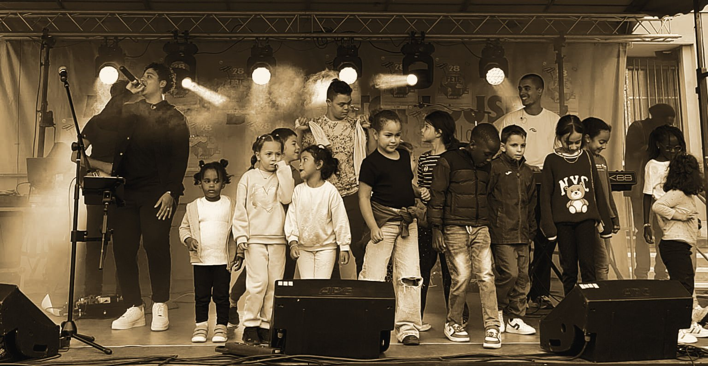
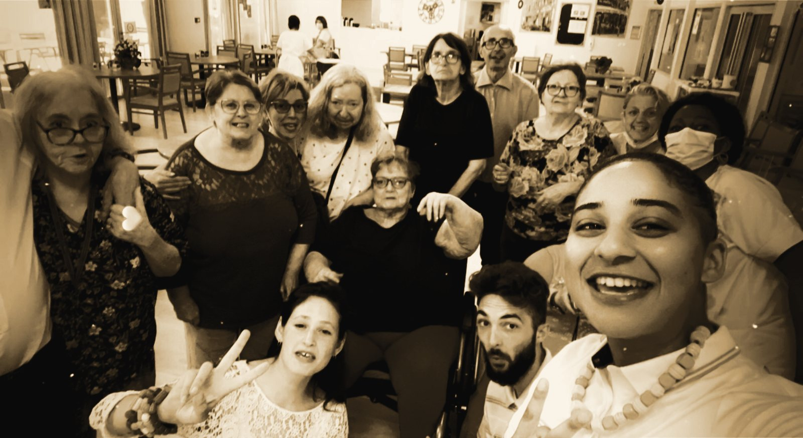
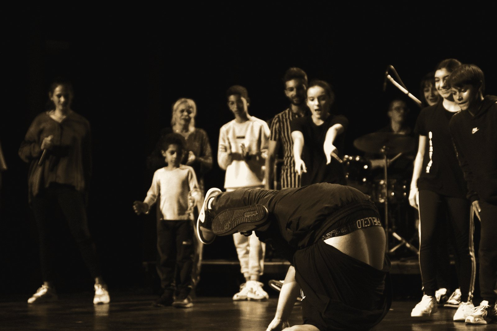
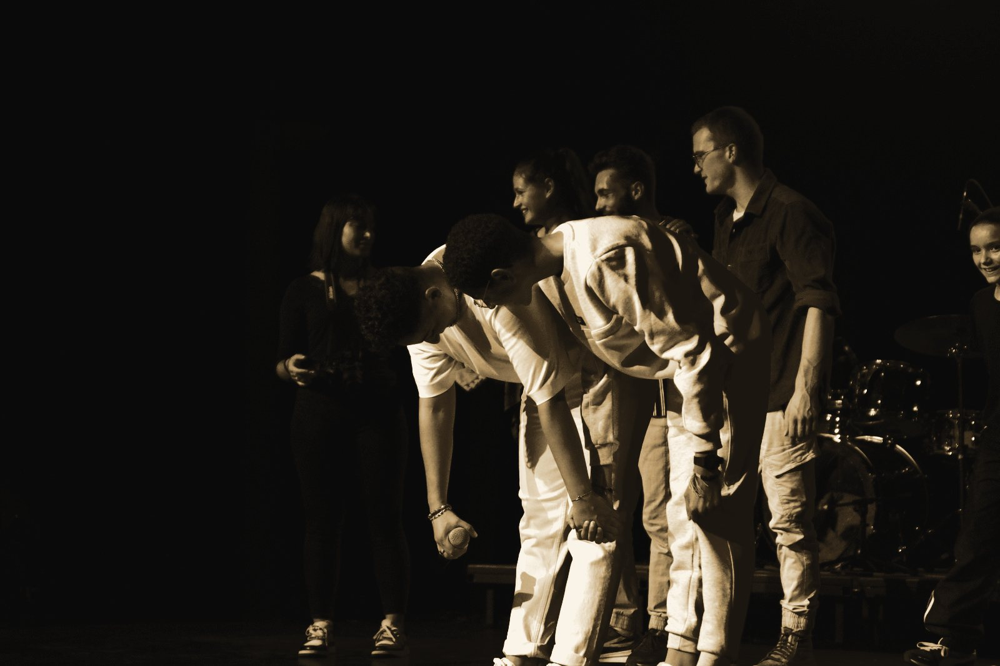
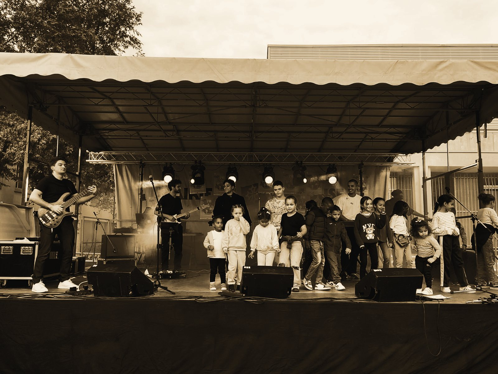

Association toulousaine · depuis 2020
Apporter de la musique à des endroits où il n'y en a pas.
Win'As est une association toulousaine qui accompagne les jeunes passionnés de musique dans leur développement artistique. Sa mission : donner à la jeunesse les moyens de créer, d'apprendre et de s'exprimer à travers la musique.
La musique y est vue comme bien plus qu'un art : un langage universel, un outil de confiance et un moteur d'unité. Win'As propose des ateliers, des formations, des enregistrements et des accompagnements scéniques accessibles à tous, dans un cadre bienveillant et professionnel.
Derrière Win'As, une équipe passionnée : Houriaa, artiste fondatrice, entourée de musiciens et de techniciens engagés, qui partagent la même vision d'une musique porteuse d'espoir, d'énergie et de partage.

« Faire résonner la musique dans chaque lieu oublié. »
L'association est née d'une volonté simple mais essentielle : apporter de la musique là où il n'y en a pas. Par la création artistique, la transmission et la rencontre, elle développe des projets musicaux au cœur de lieux et de territoires parfois éloignés de l'offre culturelle.
Ateliers, temps de partage, actions intergénérationnelles et performances : chaque projet est pensé comme une expérience humaine et collective, où la musique devient un langage commun, un outil d'émancipation et un moyen de redonner une place à la sensibilité, à l'écoute et à la créativité.





La cagnotte en cours, portée par Win'As sur HelloAsso, finance le prochain album de Houriaa : enregistrement, arrangements, musiciens, mixage et promotion. Vous pouvez aussi faire un don directement à l'association pour ses actions.